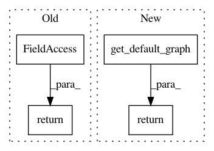

4b45bfe96b53bde91f97464016fa1f9deb68ca8a,tensorflow_transform/analyzers.py,Analyzer,inputs,#Analyzer#,87
Before Change
@property
def inputs(self):
return self._inputs
@property
def outputs(self):
return self._outputs
After Change
@property
def inputs(self):
return [tf.get_default_graph().get_tensor_by_name(name)
for name in self._input_tensor_names]
@property
def outputs(self):
return [tf.get_default_graph().get_tensor_by_name(output_info.name)
In pattern: SUPERPATTERN
Frequency: 3
Non-data size: 4
Instances
Project Name: tensorflow/transform
Commit Name: 4b45bfe96b53bde91f97464016fa1f9deb68ca8a
Time: 2018-03-19
Author: tf-transform-dev@google.com
File Name: tensorflow_transform/analyzers.py
Class Name: Analyzer
Method Name: inputs
Project Name: keras-team/keras
Commit Name: 114b82a212ed2b2590d45550c41c3384ffa0d53e
Time: 2016-11-01
Author: francois.chollet@gmail.com
File Name: keras/backend/tensorflow_backend.py
Class Name:
Method Name: learning_phase
Project Name: tensorflow/transform
Commit Name: 4b45bfe96b53bde91f97464016fa1f9deb68ca8a
Time: 2018-03-19
Author: tf-transform-dev@google.com
File Name: tensorflow_transform/analyzers.py
Class Name: Analyzer
Method Name: outputs